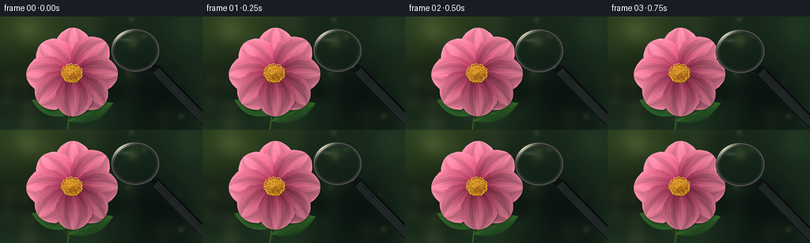
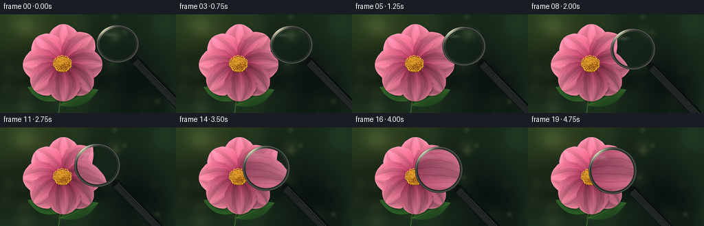

CODING AGENTS AS PIXEL WORLD MODELS
traex/GPT-6.1-Sol · phygen_070
点击播放 · 原生 RGB 像素
逐轮保存的候选
回放视频、检查图与代码变化。
每份候选均可单独播放。实际图片检查记录在下方工具轨迹中。
候选 01播放与检查图
点击播放 · 原生 RGB 像素


展开代码变化
--- 上一保存版本
+++ 本次保存版本
@@ -0,0 +1,210 @@
+from pathlib import Path
+import json
+import math
+import numpy as np
+from PIL import Image, ImageDraw, ImageFilter
+from artifact_io import save
+
+ROOT=Path(__file__).resolve().parent
+SPEC=json.loads((ROOT/'task_spec.json').read_text())
+W,H=SPEC['width'],SPEC['height']
+S=4
+w,h=W*S,H*S
+rng=np.random.default_rng(709)
+y,x=np.mgrid[0:h,0:w].astype(float)
+x/=S; y/=S
+
+def blend(bg,fg,a):
+ return bg*(1-a[...,None])+fg*a[...,None]
+
+def background():
+ # Out-of-focus garden, with warm light coming through foliage.
+ field=np.zeros((h,w))
+ for _ in range(42):
+ cx,cy=rng.uniform(-30,W+30),rng.uniform(-30,H+30)
+ rad=rng.uniform(9,46)
+ field+=rng.uniform(-.55,.55)*np.exp(-((x-cx)**2+(y-cy)**2)/(2*rad**2))
+ warm=np.exp(-((x-40)**2+(y-8)**2)/5600)
+ arr=np.stack([25+field*14+warm*24,43+field*22+warm*27,28+field*11+warm*6],-1)
+ arr=np.clip(arr,0,255)
+ for _ in range(27):
+ cx,cy=rng.uniform(0,W),rng.uniform(0,H)
+ rad=rng.uniform(2,12)
+ soft=np.exp(-((x-cx)**2+(y-cy)**2)/(2*rad**2))*rng.uniform(.035,.15)
+ arr=blend(arr,np.broadcast_to(np.array([148,165,92]),arr.shape),soft)
+ return arr
+
+def draw_leaf(arr,start,end,width):
+ dx,dy=end[0]-start[0],end[1]-start[1]
+ length=math.hypot(dx,dy); ex,ey=dx/length,dy/length
+ u=(x-start[0])*ex+(y-start[1])*ey
+ v=-(x-start[0])*ey+(y-start[1])*ex
+ t=np.clip(u/length,0,1)
+ half=width*np.sin(np.pi*t)**.85
+ alpha=np.clip((half-np.abs(v))*S,0,1)*((u>0)&(u<length))
+ light= .45+.35*(1-np.clip(v/(half+1),-1,1))+.12*np.cos(t*7)
+ veins=np.exp(-((v-(np.mod(t*8,1)-.5)*half*1.4)/.25)**2)*.04
+ col=np.stack([23+light*20+veins*120,52+light*39+veins*160,25+light*13],-1)
+ arr=blend(arr,col,alpha)
+ central=np.exp(-(v/.4)**2)*alpha*.30
+ return blend(arr,np.broadcast_to(np.array([130,148,66]),arr.shape),central)
+
+def flower_scene():
+ arr=background()
+ # Quiet, curved stem and two leaves anchor the blossom in the garden.
+ stem=Image.fromarray(np.uint8(np.clip(arr,0,255)))
+ d=ImageDraw.Draw(stem)
+ pts=[]
+ for t in np.linspace(0,1,100):
+ pts.append(((91-8*t+2*np.sin(t*3))*S,(78+82*t)*S))
+ d.line(pts,fill=(28,55,29),width=5*S)
+ d.line([(a-S*.9,b) for a,b in pts],fill=(75,101,46),width=1*S)
+ arr=np.asarray(stem).astype(float)
+ arr=draw_leaf(arr,(86,125),(40,106),10)
+ arr=draw_leaf(arr,(87,133),(143,110),11)
+ cx,cy=91,73
+ # The eight petals are independently shaped and shaded, including their
+ # longitudinal cellular ridges, tiny fibers, scallops and rolled edges.
+ angles=[-2.36,-1.56,-.78,.00,.78,1.58,2.37,3.13]
+ lengths=[55,59,59,58,56,54,56,58]
+ widths=[24,24,24,24,24,24,25,24]
+ order=[1,0,2,7,3,6,4,5]
+ for i in order:
+ angle=angles[i]+rng.normal(0,.025)
+ ex,ey=np.cos(angle),np.sin(angle)
+ u=(x-cx)*ex+(y-cy)*ey
+ v=-(x-cx)*ey+(y-cy)*ex
+ L=lengths[i]; wide=widths[i]
+ t=np.clip((u-3)/(L-3),0,1)
+ bend=1.4*np.sin(t*np.pi)*np.sin(i*2.1)
+ vv=v-bend
+ half=wide*np.sin(np.pi*t)**.51*(.87+.2*t)
+ half*=1+.022*np.sin(t*24+i)+.015*np.sin(t*51+.7*i)
+ # Rounded lobed tip and subtly uneven petal edges.
+ edge=half-np.abs(vv)
+ mask=np.clip(edge*S+.5,0,1)*((u>=3)&(u<=L))
+ # Petal shadow over the underlying layers.
+ sh=Image.fromarray(np.uint8(mask*255)).filter(ImageFilter.GaussianBlur(1.0*S))
+ sharr=np.asarray(sh)/255*.25
+ sharr=np.roll(np.roll(sharr,2*S,axis=0),1*S,axis=1)
+ arr*=1-sharr[...,None]
+ n=vv/(half+1)
+ curve=1-.30*n**2
+ fold=.095*np.cos(n*7.5+.7*np.sin(t*4))+.030*np.cos(n*18+t*4)
+ lighting=.83+.18*(-ex*.6-ey*.8)+fold+.10*curve
+ base=np.array([155,30,68]); tip=np.array([243,139,165])
+ progression=np.clip(t**.62,0,1)
+ color=base[None,None,:]*(1-progression[...,None])+tip[None,None,:]*progression[...,None]
+ color*=lighting[...,None]
+ # Fine, branching radial veins, strongest in the transmitted light.
+ phase=n*37+.9*np.sin(t*9+n*4)+.5*np.sin(t*18+i)
+ veins=(np.maximum(0,np.cos(phase))**14)*(.65+.35*t)
+ ribs=np.maximum(0,np.sin(n*71+np.sin(t*16)))**18
+ fine=np.sin(u*7.0+vv*15.8+i)*np.sin(vv*31.3-u*2.7)*.65
+ color-=veins[...,None]*np.array([16,24,21])
+ color+=ribs[...,None]*np.array([6,8,7])+fine[...,None]
+ # A slim bright raised edge; shaded roll on the opposite side.
+ rim=np.exp(-np.maximum(edge,0)/.9)*mask
+ color+=rim[...,None]*np.array([11,15,11])
+ basal=np.exp(-u/12)*(1-.2*np.cos(vv*1.9))
+ color-=basal[...,None]*np.array([20,13,9])
+ arr=blend(arr,np.clip(color,0,255),mask)
+ # Dense golden pollen disk, rendered as hundreds of shaded florets.
+ im=Image.fromarray(np.uint8(np.clip(arr,0,255)))
+ d=ImageDraw.Draw(im)
+ d.ellipse(((cx-13)*S,(cy-11.5)*S,(cx+13)*S,(cy+11.5)*S),fill=(101,54,22))
+ count=330
+ for j in range(count-1,-1,-1):
+ rr=12.6*np.sqrt((j+.5)/count)
+ a=j*2.3999632297
+ px=cx+rr*np.cos(a); py=cy+.87*rr*np.sin(a)
+ r=rng.uniform(.40,.72)
+ br=rng.uniform(.77,1.10)
+ d.ellipse(((px-r*.9)*S,(py-r)*S,(px+r*1.3)*S,(py+r*1.6)*S),fill=(97,45,13))
+ d.ellipse(((px-r)*S,(py-r)*S,(px+r)*S,(py+r)*S),fill=(int(229*br),int(146*br),int(30*br)))
+ d.ellipse(((px-r*.6)*S,(py-r*.7)*S,px*S,(py-.05)*S),fill=(255,215,int(rng.uniform(64,109))))
+ # Small isolated stamens make an irregular organic boundary.
+ for j in range(47):
+ a=j*2*np.pi/47+rng.normal(0,.02)
+ rr=rng.uniform(11.5,14)
+ px=cx+rr*np.cos(a); py=cy+.87*rr*np.sin(a)
+ d.line([(px*S,py*S),((px-.4)*S,(py-1.5)*S)],fill=(185,116,24),width=2)
+ d.ellipse(((px-.5)*S,(py-1.8)*S,(px+.5)*S,(py-.8)*S),fill=(251,202,56))
+ return np.asarray(im).astype(float)
+
+SCENE=flower_scene()
+
+def sample(image,xx,yy):
+ xx=np.clip(xx*S,0,w-1.001); yy=np.clip(yy*S,0,h-1.001)
+ xi=xx.astype(int); yi=yy.astype(int)
+ ax=(xx-xi)[...,None]; ay=(yy-yi)[...,None]
+ return image[yi,xi]*(1-ax)*(1-ay)+image[yi,xi+1]*ax*(1-ay)+image[yi+1,xi]*(1-ax)*ay+image[yi+1,xi+1]*ax*ay
+
+
+def render(t):
+ smooth=t*t*(3-2*t)
+ cx=171-48*smooth; cy=43+20*smooth
+ radius=29.5+4.2*smooth
+ aspect=.89+.09*smooth
+ rx=radius; ry=radius*aspect
+ arr=SCENE.copy()
+ # The handle stays attached to the rim and leaves the frame at lower right.
+ angle=.80
+ direction=np.array([np.cos(angle),np.sin(angle)])
+ attach=np.array([cx,cy])+direction*np.array([rx,ry])*.95
+ tip=attach+direction*106
+ im=Image.fromarray(np.uint8(np.clip(arr,0,255)))
+ handle=Image.new('RGBA',(w,h),(0,0,0,0)); d=ImageDraw.Draw(handle)
+ def line(a,b,c,width):
+ d.line([tuple(a*S),tuple(b*S)],fill=c,width=round(width*S))
+ neckend=attach+direction*15
+ line(attach,neckend,(22,25,26,255),9)
+ line(attach+np.array([-1.,-.3]),neckend+np.array([-1.,-.3]),(137,139,120,255),4)
+ gripstart=attach+direction*10
+ line(gripstart,tip,(11,16,17,255),14)
+ d.ellipse(((gripstart[0]-7)*S,(gripstart[1]-7)*S,(gripstart[0]+7)*S,(gripstart[1]+7)*S),fill=(13,17,18,255))
+ normal=np.array([-direction[1],direction[0]])
+ line(gripstart+normal*2,tip+normal*2,(31,38,37,255),8)
+ line(gripstart-normal*3,tip-normal*3,(61,65,59,255),1.0)
+ for g in range(7):
+ p=gripstart+direction*(8+g*3)
+ line(p-normal*4,p+normal*5,(20,25,24,255),.5)
+ im=Image.alpha_composite(im.convert('RGBA'),handle)
+ arr=np.asarray(im.convert('RGB')).astype(float)
+ dx=x-cx; dy=(y-cy)/aspect
+ rr=np.sqrt(dx*dx+dy*dy)
+ rho=rr/radius
+ magnification=1.10+1.50*smooth
+ # Local magnification with a weak spherical edge distortion.
+ inv=(1/magnification)*(1+.075*rho**4)
+ lens=sample(SCENE,cx+dx*inv,cy+dy*aspect*inv)
+ lens=lens*np.array([.995,1.015,1.025])+np.array([.4,.7,1.0])
+ interior=np.clip((radius-2.8-rr)*S,0,1)
+ arr=blend(arr,lens,interior)
+ # Soft interior reflections -- mostly transparent so veins remain visible.
+ light=np.exp(-((dx+rx*.43)**2/(rx*.23)**2+(dy+ry*.58)**2/(ry*.10)**2))*interior*.14
+ arr=blend(arr,np.broadcast_to(np.array([229,241,225]),arr.shape),light)
+ # Gunmetal/brushed-brass annular frame with bevels, highlights and shadows.
+ outer=radius+1.5; inner=radius-3.0
+ ring=np.clip((outer-rr)*S,0,1)*np.clip((rr-inner)*S,0,1)
+ theta=np.arctan2(dy,dx)
+ band=np.clip((rr-inner)/(outer-inner),0,1)
+ illumination=np.maximum(0,np.cos(theta+2.3))**8
+ inneredge=np.exp(-((band-.10)/.13)**2)
+ crest=np.exp(-((band-.66)/.19)**2)
+ rgb=np.stack([27+crest*61+illumination*129+inneredge*25,
+ 31+crest*62+illumination*124+inneredge*25,
+ 30+crest*53+illumination*104+inneredge*23],-1)
+ arr=blend(arr,rgb,ring)
+ # Fine sharp catchlight on the upper-left metal edge.
+ catch=np.exp(-((rr-(radius+.4))/.30)**2)*np.maximum(0,np.cos(theta+2.15))**20*.7
+ arr=blend(arr,np.broadcast_to(np.array([239,237,206]),arr.shape),catch)
+ # Glass edge glint and a tiny lower-right reflection.
+ arc=np.exp(-((rr-(radius-4.6))/.28)**2)*np.maximum(0,np.cos(theta+2.35))**18*.34
+ arr=blend(arr,np.broadcast_to(np.array([224,242,233]),arr.shape),arc*interior)
+ out=Image.fromarray(np.uint8(np.clip(arr,0,255)))
+ return np.asarray(out.resize((W,H),Image.Resampling.LANCZOS))
+
+frames=np.stack([render(i/(SPEC['frames']-1)) for i in range(SPEC['frames'])])
+save(frames,ROOT)
+print('Saved',frames.shape,frames.dtype)
可观测工具轨迹
实际执行的命令与返回图片。
命令 1exit 0
/bin/bash -lc 'ls -la && cat prompt.txt && cat GENERATION_RULES.md && cat task_spec.json'
命令 2exit 0
/bin/bash -lc "cat artifact_io.py && python - <<'PY'
import numpy,PIL
print('numpy',numpy.__version__,'PIL',PIL.__version__)
PY"命令 3exit 0
/bin/bash -lc "mkdir -p .tmp && cat > generate.py <<'PY'
from pathlib import Path
import json
import math
import numpy as np
from PIL import Image, ImageDraw, ImageFilter
from artifact_io import save
ROOT=Path(__file__).resolve().parent
SPEC=json.loads((ROOT/'task_spec.json').read_text())
W,H=SPEC['width'],SPEC['height']
S=4
w,h=W*S,H*S
rng=np.random.default_rng(709)
y,x=np.mgrid[0:h,0:w].astype(float)
x/=S; y/=S
def blend(bg,fg,a):
return bg*(1-a[...,None])+fg*a[...,None]
def background():
# Out-of-focus garden, with warm light coming through foliage.
field=np.zeros((h,w))
for _ in range(42):
cx,cy=rng.uniform(-30,W+30),rng.uniform(-30,H+30)
rad=rng.uniform(9,46)
field+=rng.uniform(-.55,.55)*np.exp(-((x-cx)**2+(y-cy)**2)/(2*rad**2))
warm=np.exp(-((x-40)**2+(y-8)**2)/5600)
arr=np.stack([25+field*14+warm*24,43+field*22+warm*27,28+field*11+warm*6],-1)
arr=np.clip(arr,0,255)
for _ in range(27):
cx,cy=rng.uniform(0,W),rng.uniform(0,H)
rad=rng.uniform(2,12)
soft=np.exp(-((x-cx)**2+(y-cy)**2)/(2*rad**2))*rng.uniform(.035,.15)
arr=blend(arr,np.broadcast_to(np.array([148,165,92]),arr.shape),soft)
return arr
def draw_leaf(arr,start,end,width):
dx,dy=end[0]-start[0],end[1]-start[1]
length=math.hypot(dx,dy); ex,ey=dx/length,dy/length
u=(x-start[0])*ex+(y-start[1])*ey
v=-(x-start[0])*ey+(y-start[1])*ex
t=np.clip(u/length,0,1)
half=width*np.sin(np.pi*t)**.85
alpha=np.clip((half-np.abs(v))*S,0,1)*((u>0)&(u<length))
light= .45+.35*(1-np.clip(v/(half+1),-1,1))+.12*np.cos(t*7)
veins=np.exp(-((v-(np.mod(t*8,1)-.5)*half*1.4)/.25)**2)*.04
col=np.stack([23+light*20+veins*120,52+light*39+veins*160,25+light*13],-1)
arr=blend(arr,col,alpha)
central=np.exp(-(v/.4)**2)*alpha*.30
return blend(arr,np.broadcast_to(np.array([130,148,66]),arr.shape),central)
def flower_scene():
arr=background()
# Quiet, curved stem and two leaves anchor the blossom in the garden.
stem=Image.fromarray(np.uint8(np.clip(arr,0,255)))
d=ImageDraw.Draw(stem)
pts=[]
for t in np.linspace(0,1,100):
pts.append(((91-8*t+2*np.sin(t*3))*S,(78+82*t)*S))
d.line(pts,fill=(28,55,29),width=5*S)
d.line([(a-S*.9,b) for a,b in pts],fill=(75,101,46),width=1*S)
arr=np.asarray(stem).astype(float)
arr=draw_leaf(arr,(86,125),(40,106),10)
arr=draw_leaf(arr,(87,133),(143,110),11)
cx,cy=91,73
# The eight petals are independently shaped and shaded, including their
# longitudinal cellular ridges, tiny fibers, scallops and rolled edges.
angles=[-2.36,-1.56,-.78,.00,.78,1.58,2.37,3.13]
lengths=[55,59,59,58,56,54,56,58]
widths=[24,24,24,24,24,24,25,24]
order=[1,0,2,7,3,6,4,5]
for i in order:
angle=angles[i]+rng.normal(0,.025)
ex,ey=np.cos(angle),np.sin(angle)
u=(x-cx)*ex+(y-cy)*ey
v=-(x-cx)*ey+(y-cy)*ex
L=lengths[i]; wide=widths[i]
t=np.clip((u-3)/(L-3),0,1)
bend=1.4*np.sin(t*np.pi)*np.sin(i*2.1)
vv=v-bend
half=wide*np.sin(np.pi*t)**.51*(.87+.2*t)
half*=1+.022*np.sin(t*24+i)+.015*np.sin(t*51+.7*i)
# Rounded lobed tip and subtly uneven petal edges.
edge=half-np.abs(vv)
mask=np.clip(edge*S+.5,0,1)*((u>=3)&(u<=L))
# Petal shadow over the underlying layers.
sh=Image.fromarray(np.uint8(mask*255)).filter(ImageFilter.GaussianBlur(1.0*S))
sharr=np.asarray(sh)/255*.25
sharr=np.roll(np.roll(sharr,2*S,axis=0),1*S,axis=1)
arr*=1-sharr[...,None]
n=vv/(half+1)
curve=1-.30*n**2
fold=.095*np.cos(n*7.5+.7*np.sin(t*4))+.030*np.cos(n*18+t*4)
lighting=.83+.18*(-ex*.6-ey*.8)+fold+.10*curve
base=np.array([155,30,68]); tip=np.array([243,139,165])
progression=np.clip(t**.62,0,1)
color=base[None,None,:]*(1-progression[...,None])+tip[None,None,:]*progression[...,None]
color*=lighting[...,None]
# Fine, branching radial veins, strongest in the transmitted light.
phase=n*37+.9*np.sin(t*9+n*4)+.5*np.sin(t*18+i)
veins=(np.maximum(0,np.cos(phase))**14)*(.65+.35*t)
ribs=np.maximum(0,np.sin(n*71+np.sin(t*16)))**18
fine=np.sin(u*7.0+vv*15.8+i)*np.sin(vv*31.3-u*2.7)*.65
color-=veins[...,None]*np.array([16,24,21])
color+=ribs[...,None]*np.array([6,8,7])+fine[...,None]
# A slim bright raised edge; shaded roll on the opposite side.
rim=np.exp(-np.maximum(edge,0)/.9)*mask
color+=rim[...,None]*np.array([11,15,11])
basal=np.exp(-u/12)*(1-.2*np.cos(vv*1.9))
color-=basal[...,None]*np.array([20,13,9])
arr=blend(arr,np.clip(color,0,255),mask)
# Dense golden pollen disk, rendered as hundreds of shaded florets.
im=Image.fromarray(np.uint8(np.clip(arr,0,255)))
d=ImageDraw.Draw(im)
d.ellipse(((cx-13)*S,(cy-11.5)*S,(cx+13)*S,(cy+11.5)*S),fill=(101,54,22))
count=330
for j in range(count-1,-1,-1):
rr=12.6*np.sqrt((j+.5)/count)
a=j*2.3999632297
px=cx+rr*np.cos(a); py=cy+.87*rr*np.sin(a)
r=rng.uniform(.40,.72)
br=rng.uniform(.77,1.10)
d.ellipse(((px-r*.9)*S,(py-r)*S,(px+r*1.3)*S,(py+r*1.6)*S),fill=(97,45,13))
d.ellipse(((px-r)*S,(py-r)*S,(px+r)*S,(py+r)*S),fill=(int(229*br),int(146*br),int(30*br)))
d.ellipse(((px-r*.6)*S,(py-r*.7)*S,px*S,(py-.05)*S),fill=(255,215,int(rng.uniform(64,109))))
# Small isolated stamens make an irregular organic boundary.
for j in range(47):
a=j*2*np.pi/47+rng.normal(0,.02)
rr=rng.uniform(11.5,14)
px=cx+rr*np.cos(a); py=cy+.87*rr*np.sin(a)
d.line([(px*S,py*S),((px-.4)*S,(py-1.5)*S)],fill=(185,116,24),width=2)
d.ellipse(((px-.5)*S,(py-1.8)*S,(px+.5)*S,(py-.8)*S),fill=(251,202,56))
return np.asarray(im).astype(float)
SCENE=flower_scene()
def sample(image,xx,yy):
xx=np.clip(xx*S,0,w-1.001); yy=np.clip(yy*S,0,h-1.001)
xi=xx.astype(int); yi=yy.astype(int)
ax=(xx-xi)[...,None]; ay=(yy-yi)[...,None]
return image[yi,xi]*(1-ax)*(1-ay)+image[yi,xi+1]*ax*(1-ay)+image[yi+1,xi]*(1-ax)*ay+image[yi+1,xi+1]*ax*ay
def render(t):
smooth=t*t*(3-2*t)
cx=171-48*smooth; cy=43+20*smooth
radius=29.5+4.2*smooth
aspect=.89+.09*smooth
rx=radius; ry=radius*aspect
arr=SCENE.copy()
# The handle stays attached to the rim and leaves the frame at lower right.
angle=.80
direction=np.array([np.cos(angle),np.sin(angle)])
attach=np.array([cx,cy])+direction*np.array([rx,ry])*.95
tip=attach+direction*106
im=Image.fromarray(np.uint8(np.clip(arr,0,255)))
handle=Image.new('RGBA',(w,h),(0,0,0,0)); d=ImageDraw.Draw(handle)
def line(a,b,c,width):
d.line([tuple(a*S),tuple(b*S)],fill=c,width=round(width*S))
neckend=attach+direction*15
line(attach,neckend,(22,25,26,255),9)
line(attach+np.array([-1.,-.3]),neckend+np.array([-1.,-.3]),(137,139,120,255),4)
gripstart=attach+direction*10
line(gripstart,tip,(11,16,17,255),14)
d.ellipse(((gripstart[0]-7)*S,(gripstart[1]-7)*S,(gripstart[0]+7)*S,(gripstart[1]+7)*S),fill=(13,17,18,255))
normal=np.array([-direction[1],direction[0]])
line(gripstart+normal*2,tip+normal*2,(31,38,37,255),8)
line(gripstart-normal*3,tip-normal*3,(61,65,59,255),1.0)
for g in range(7):
p=gripstart+direction*(8+g*3)
line(p-normal*4,p+normal*5,(20,25,24,255),.5)
im=Image.alpha_composite(im.convert('RGBA'),handle)
arr=np.asarray(im.convert('RGB')).astype(float)
dx=x-cx; dy=(y-cy)/aspect
rr=np.sqrt(dx*dx+dy*dy)
rho=rr/radius
magnification=1.10+1.50*smooth
# Local magnification with a weak spherical edge distortion.
inv=(1/magnification)*(1+.075*rho**4)
lens=sample(SCENE,cx+dx*inv,cy+dy*aspect*inv)
lens=lens*np.array([.995,1.015,1.025])+np.array([.4,.7,1.0])
interior=np.clip((radius-2.8-rr)*S,0,1)
arr=blend(arr,lens,interior)
# Soft interior reflections -- mostly transparent so veins remain visible.
light=np.exp(-((dx+rx*.43)**2/(rx*.23)**2+(dy+ry*.58)**2/(ry*.10)**2))*interior*.14
arr=blend(arr,np.broadcast_to(np.array([229,241,225]),arr.shape),light)
# Gunmetal/brushed-brass annular frame with bevels, highlights and shadows.
outer=radius+1.5; inner=radius-3.0
ring=np.clip((outer-rr)*S,0,1)*np.clip((rr-inner)*S,0,1)
theta=np.arctan2(dy,dx)
band=np.clip((rr-inner)/(outer-inner),0,1)
illumination=np.maximum(0,np.cos(theta+2.3))**8
inneredge=np.exp(-((band-.10)/.13)**2)
crest=np.exp(-((band-.66)/.19)**2)
rgb=np.stack([27+crest*61+illumination*129+inneredge*25,
31+crest*62+illumination*124+inneredge*25,
30+crest*53+illumination*104+inneredge*23],-1)
arr=blend(arr,rgb,ring)
# Fine sharp catchlight on the upper-left metal edge.
catch=np.exp(-((rr-(radius+.4))/.30)**2)*np.maximum(0,np.cos(theta+2.15))**20*.7
arr=blend(arr,np.broadcast_to(np.array([239,237,206]),arr.shape),catch)
# Glass edge glint and a tiny lower-right reflection.
arc=np.exp(-((rr-(radius-4.6))/.28)**2)*np.maximum(0,np.cos(theta+2.35))**18*.34
arr=blend(arr,np.broadcast_to(np.array([224,242,233]),arr.shape),arc*interior)
out=Image.fromarray(np.uint8(np.clip(arr,0,255)))
return np.asarray(out.resize((W,H),Image.Resampling.LANCZOS))
frames=np.stack([render(i/(SPEC['frames']-1)) for i in range(SPEC['frames'])])
save(frames,ROOT)
print('Saved',frames.shape,frames.dtype)
PY
python generate.py"视觉工具实际返回图片 1

保存候选 1 份；完成命令 3 次；可验证图片返回 1 张。原始 API 响应与完整日志保留在本地。